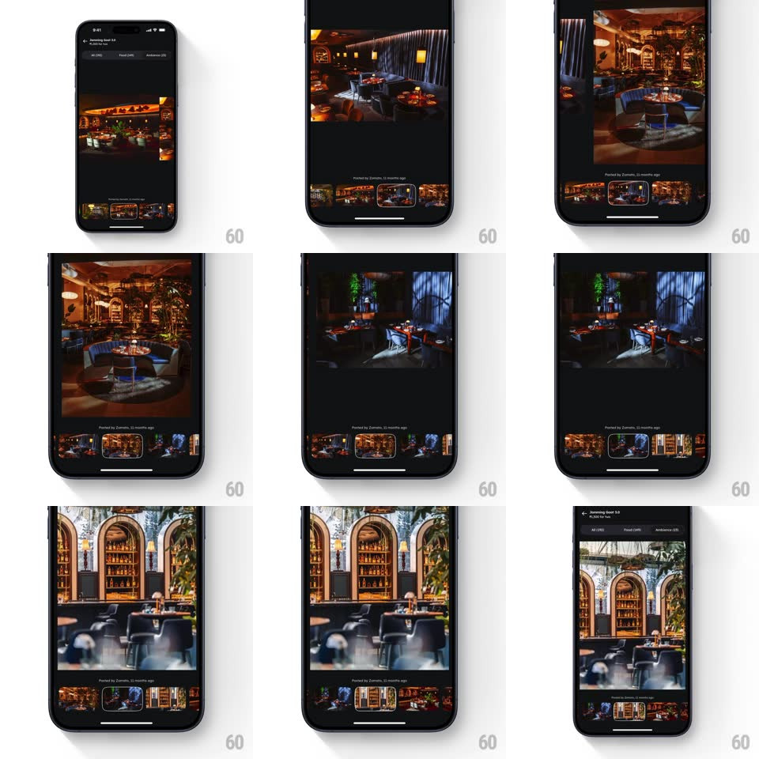

Media
Frame-by-frame

Rebuild this interaction 1:1: Zomato's restaurant gallery - tapping a photo in the inline grid opens it full-screen with a shared-element transition, and swiping between full-screen photos keeps the bottom thumbnail strip's active outline in sync.

Rebuild this interaction 1:1: Zomato's restaurant gallery - tapping a photo in the inline grid opens it full-screen with a shared-element transition, and swiping between full-screen photos keeps the bottom thumbnail strip's active outline in sync.
## Integration
Integration: stack-agnostic spec - springs given as stiffness/damping, timed motions as duration + curve; map every value to your framework and animation library of choice.
## Scene
The restaurant page ("Boombox Brew 3.0", tabs All/Food/Ambience) with an inline grid of warm interior photos. Full-screen preview: the photo fills the black viewer ("Posted by Zomato, 11 months ago" caption), with a centered thumbnail strip at the bottom - the active thumbnail carries a white outline.
## Motion spec
Pattern: shared-element zoom + synced thumbnail navigation.
- Tap an inline photo: the photo itself expands from its grid cell to full screen (shared-element morph, spring ~320/26, 350ms), the background fading to black as it travels; the thumbnail strip slides up (250ms, delayed 100ms).
- Swipe horizontally: photos page with the finger (1:1), settling with a spring (~380/24); the strip auto-scrolls to keep the active thumb centered and the outline slides to it (spring ~420/24, 250ms).
- Tap a thumbnail: the viewer crossfades/jumps to that photo (250ms) and the outline moves.
- Pinch-zoom in full screen (up to 3x) with pan; double-tap toggles zoom at the tap point.
- Dismiss: swipe down drags the photo (1:1, scaling down slightly with distance) and releasing flings it back into its grid cell (reverse morph); X does the same instantly.
## Calibration
- The outline always sits on the visible photo's thumb - swiping and tapping drive the same state.
- The strip shows ~5 thumbs; the active one never parks at an edge.
## Reduced motion
Grid-to-viewer crossfade instead of morph; outline steps without sliding.
## Don't miss
- The inline grid and the strip show the same crop ratios so the morph reads clean.
- The caption fades with the chrome on tap-to-hide, leaving pure photo.